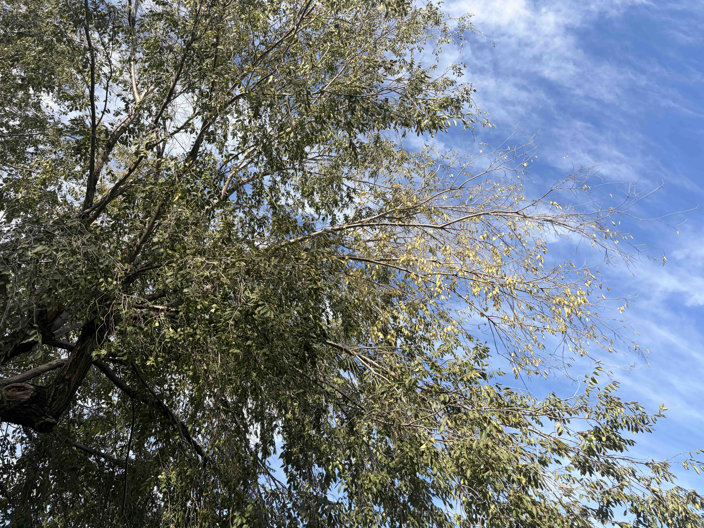
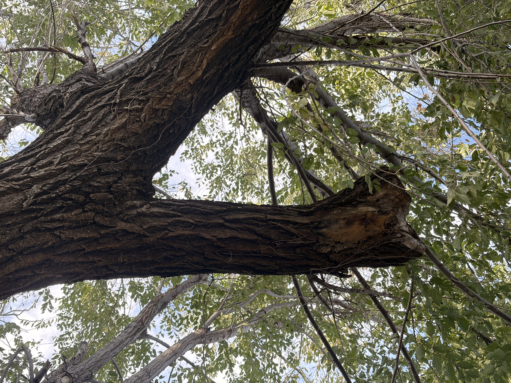
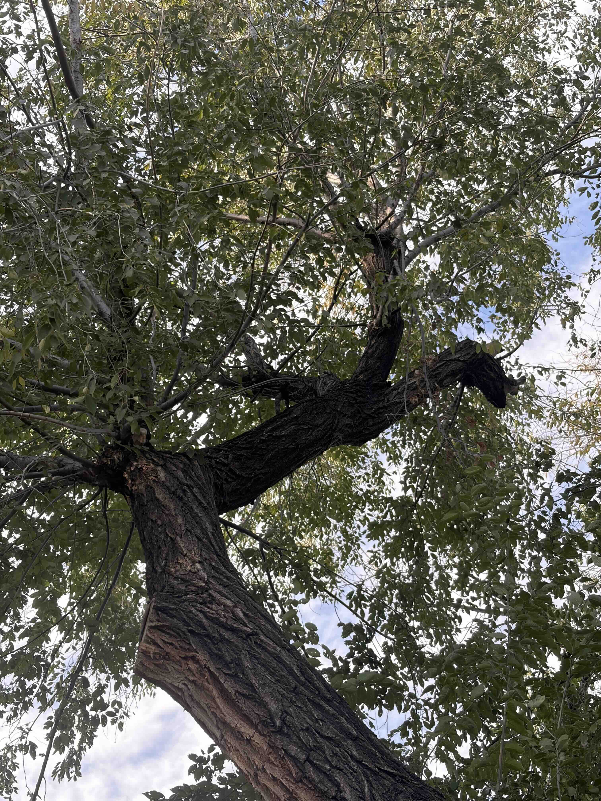
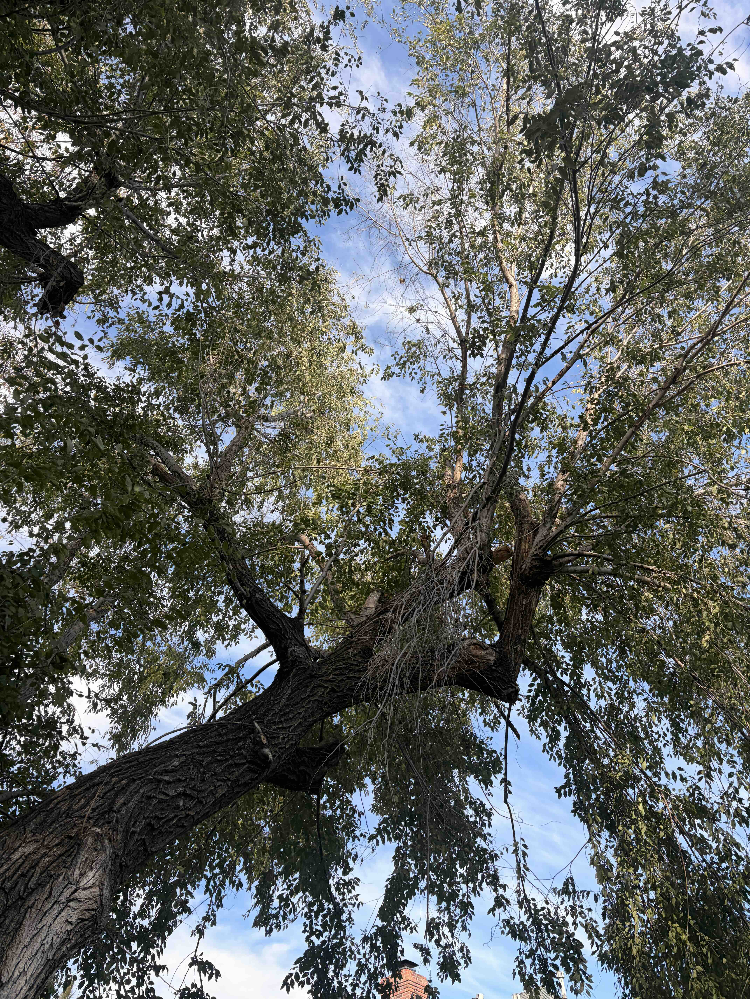

Elm Tree Condition Assessment
& Service Proposal
Prepared November 18, 2026
1. Purpose of Assessment
Abundant Life Land & Tree LLC has examined the visible above-ground condition of a mature elm situated near the boundary between Jason Milacek's property and an adjoining residential property.
The purpose of this report is to document observed indicators of declining vitality and compromised crown structure, present available management options, and assist neighboring property owners in reaching an informed, coordinated decision.
This document constitutes a limited visual condition assessment and service proposal. It is not a formal tree risk assessment.
2. Observed Tree Condition
The subject elm exhibits a combination of historic pruning injuries, structural defects, deadwood accumulation, and indicators of declining vitality.
Historic Pruning Damage
- Numerous large pruning cuts were made between natural branch unions, commonly described as internodal or heading cuts.
- Several historic pruning wounds exhibit exposed wood, deterioration, and conditions suggestive of decay.
- The tree displays evidence of repeated, substantial crown reduction over an extended period.
Compromised Crown Architecture
- A substantial majority of the remaining crown appears to consist of secondary or epicormic growth originating from previously headed structural limbs.
- The attachment characteristics of this secondary growth warrant concern, particularly where it originates near large historic pruning wounds or deteriorating parent limbs.
- Historic storm-related branch tear-out and associated structural damage are evident.
Deadwood, Bark Loss & Discoloration
- Extensive deadwood is present throughout portions of the crown.
- Yellowing foliage and localized crown thinning are visible.
- Areas of missing bark expose wood exhibiting alternating darker and lighter discoloration.
- These conditions are consistent with tissue deterioration but do not independently establish the extent of internal decay.
- Evidence suggestive of fungal activity has been observed. The organism and significance have not been confirmed.
Declining Vitality
The combination of crown dieback, foliage discoloration, historic structural injury, and extensive secondary shoot growth indicates substantial physiological and structural stress.
Although the tree retains living foliage, its history of severe pruning and existing crown defects substantially limit the prospects for successful long-term rehabilitation.
3. Structural Concerns
Visible defects include large historic heading cuts, suspected decay, compromised crown architecture, storm-related damage, and significant deadwood.
Of particular concern is the relationship between large, historically damaged structural limbs and the substantial secondary growth they now support.
Removal of deadwood and selective reduction of certain branches may address individual defects or reduce loading on selected limbs.
However, such pruning cannot reverse established decay, restore lost structural wood, or reliably correct the underlying architecture created by repeated improper reductions.
Scope of Structural Evaluation
The base of the tree has not been evaluated. No assessment of the tree's overall risk of failure has been performed.
Accordingly, this report does not establish the condition of the root system, root collar, or lower trunk, and does not assign a probability of failure or a formal risk rating.
The concerns described herein relate specifically to the visible defects and condition of the examined above-ground portions of the tree.
4. Professional Recommendation
Based on the observed combination of declining vitality, historic structural damage, suspected decay, and compromised crown architecture, complete removal is the preferred long-term management option.
The likelihood of successfully rehabilitating the tree through corrective pruning is considered low.
This recommendation is based on the limited potential for meaningful structural rehabilitation and the persistence of substantial defects, rather than on a quantified assessment of failure risk.
Selective pruning remains an available interim management option when immediate removal is not feasible.
However, the amount of pruning that can meaningfully improve the tree's condition is limited, and additional pruning cannot reasonably be expected to restore long-term structural integrity or vitality.
5. Service Options & Pricing
Option A — Limited Risk-Mitigation Pruning
$140/hourTwo-person crew at $70 per person-hour.
Proposed scope:
- Remove selected dead, broken, or visibly compromised branches where safely accessible.
- Perform limited selective reduction where appropriate to reduce loading on identified defective limbs.
- Prioritize branches that present identifiable concerns over structures or frequently occupied areas.
- Avoid further topping, indiscriminate heading cuts, or unnecessary removal of living crown material.
Proposed Labor Authorization
| Description | Amount |
|---|---|
| Two-person crew | $140/hour |
| Maximum authorized crew time | 3 hours |
| Maximum Proposed Labor | $420 |
The proposed three-hour maximum reflects the limited amount of corrective pruning considered likely to provide meaningful benefit given the tree's existing defects.
Actual labor will be billed according to time worked, up to the authorized maximum. Additional time or expenditure requires separate approval.
Pruning is offered only as an interim measure to address selected visible defects. It is not expected to rehabilitate the tree or resolve the underlying structural concerns.
Because the tree's base has not been evaluated and no tree risk assessment has been conducted, no representation is made regarding its overall risk of failure before or after pruning.
Final pruning scope and debris handling arrangements will be confirmed before work. Work will be limited to operations judged safe and appropriate after closer inspection.
Option B — Complete Tree Removal
$1,500Recommended Long-Term Option
Included scope:
- Controlled dismantling and complete removal of the above-ground tree structure.
- Sectional removal as needed to protect nearby structures, fencing, and other site improvements.
- Processing and loading of removed tree material.
- Haul-off and disposal of tree debris generated by the removal.
- Reasonable cleanup of the work area, including collection of removal debris and general raking or blowing of affected surfaces.
The stump will remain unless the optional stump grinding service is selected.
Reasonable cleanup does not include lawn reconstruction, replacement of landscaping, soil restoration, or repair of preexisting site conditions.
Optional Stump Grinding
Grinding of the remaining stump is available for an additional $350. Grinding depth and surface restoration details will be confirmed before work.
| Service | Price |
|---|---|
| Complete Removal, Haul-Off & Cleanup | $1,500 |
| Optional Stump Grinding | $350 |
| Removal + Stump Grinding | $1,850 |
Final work methods depend on safe access, site conditions, and appropriate property-owner authorization.
6. Property Boundary & Ownership
The subject elm is situated near the boundary between Jason Milacek's property and an adjoining residential property.
Based on the reported site arrangement, the majority, but not all of the tree's base resides in Jason's property, while the base of the trunk appears to be situated on the neighboring side of the existing fence.
The location of the fence does not conclusively establish the legal property boundary or ownership of the tree.
Likewise, the proportion of the crown extending over either property does not independently establish ownership.
Given the apparent location of the trunk, Abundant Life Land & Tree strongly recommends that both neighboring property owners review the tree's condition and reach a coordinated decision before work proceeds.
Written authorization from the property owner or owners with legal authority over the tree should be obtained before complete removal.
A coordinated approach is preferred to clarify property access, work authorization, debris handling, financial responsibility, and the intended outcome.
The electronic authorization in Section 10 records Jason Milacek's affirmation that mutual consent has been obtained. It does not independently verify that consent.
This report does not determine legal ownership, establish liability, or constitute a boundary survey or legal opinion.
7. Considerations if Work Is Deferred
If no work is undertaken, the currently observed crown defects and deadwood will remain.
Additional deterioration or branch failure is possible under future loading conditions, including wind and ice. However, the likelihood or timing of any failure has not been assessed.
Monitoring may help identify changes in visible condition, but it does not correct existing structural defects.
Until a management decision is reached, avoiding unnecessary occupancy beneath visibly compromised limbs is a prudent precautionary measure.
8. Assessment Limitations
This document is a limited visual assessment of observed above-ground tree conditions.
The base of the tree, root collar, root system, and lower-trunk condition have not been evaluated.
No formal assessment of the tree's risk of failure has been performed.
No internal decay testing, root excavation, laboratory fungal identification, or advanced structural investigation was conducted.
Consequently, this report does not establish a probability of failure, formal risk classification, or comprehensive assessment of the tree's structural integrity.
The recommendation for removal reflects the observed condition of the crown and structural limbs, together with the low likelihood of successful long-term rehabilitation.
Tree conditions may change over time, and neither pruning nor inspection can guarantee freedom from future failure.
9. Photographic Documentation
The following photographs document the visible crown condition, historic pruning wounds, and altered branch architecture of the subject elm. Photographs are provided for reference and do not constitute internal decay testing or a comprehensive structural assessment.




Photographs supplied in connection with the November 18, 2026 assessment. Descriptions concern visible features only. The tree base and root system are not documented in these images.